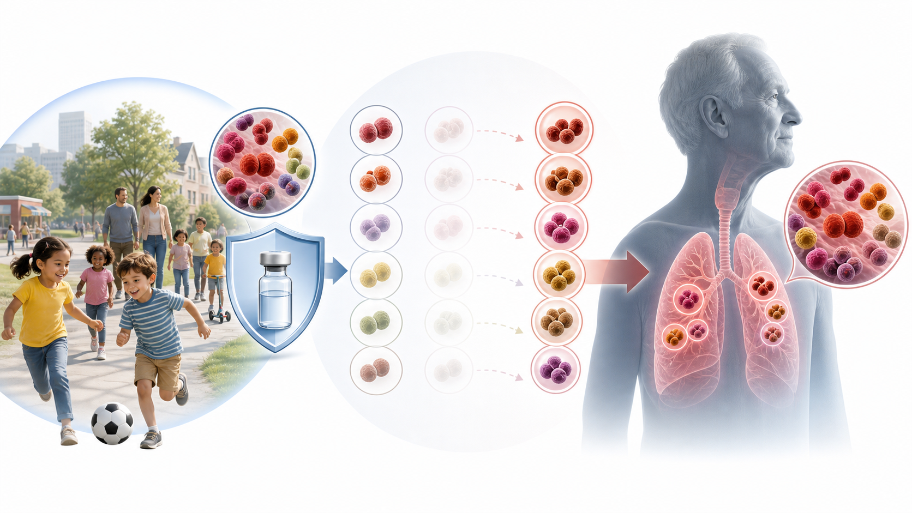
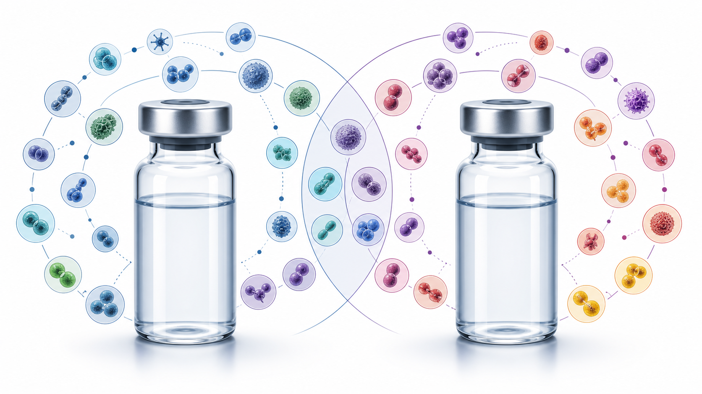

PATIENT EDUCATION · VACCINATION
프리베나20 vs 캡박시브,
어떤 차이가 있을까요?
성인 폐렴구균 백신 상담용 — PCV20과 PCV21의 혈청형, 근거, 한국 권고, 비용을 한눈에 정리합니다
02
CHAPTER 01 · ONE-LINE VERDICT
결론 — “무조건 더 좋은 백신”은 아직 없습니다
두 백신 모두 성인에서 1회 접종으로 완료되는 최신 단백접합 백신입니다
1회
PCV20과 PCV21 모두 성인에서는 보통 0.5 mL 근육주사 1회로 접종을 완료합니다.
Shared decision point
핵심 차이는 “몇 가냐”보다 어떤 혈청형을 겨냥했는지입니다.
PCV20은 더 넓은 연령 적응증과 기존 사용 경험이 강점이고,
PCV21은 성인 잔여 침습성 폐렴구균 질환(IPD) 혈청형에 더 공격적으로 맞춘 설계가 강점입니다.
03
CHAPTER 01 · WHY IT MATTERS
폐렴구균은 어른에게 더 위험해지는 균입니다
소아 백신 도입 후 균의 얼굴이 바뀌었고, 성인에게 남는 혈청형을 어떻게 막을지가 중요해졌습니다
DISEASE · 01
폐렴 · 균혈증 · 수막염
폐렴구균은 단순 감기균이 아니라 폐렴, 패혈증, 수막염 같은 중증 감염을 일으킬 수 있습니다.
RISK · 02
65세 이상과 만성질환
고령, 당뇨, 만성 심폐질환, 간·신장질환, 면역저하에서는 입원과 사망 위험이 높아집니다.
SHIFT · 03
혈청형 교체
소아 백신으로 줄어든 혈청형의 빈자리를 다른 성인형 혈청형이 채우는 변화가 관찰됩니다.
GOAL · 04
나에게 남는 위험을 줄이기
그래서 접종 상담은 나이, 기존 접종력, 질환, 비용을 함께 보며 결정합니다.

04
CHAPTER 02 · DESIGN DIFFERENCE
두 백신은 “목표 혈청형” 설계가 다릅니다
프리베나20은 범용형 확장, 캡박시브는 성인 잔여 IPD 혈청형 중심 설계입니다
20
프리베나20 · PCV20
- PCV13을 확장한 20가 단백접합 백신입니다.
- 소아부터 성인까지 넓은 적응증을 가집니다.
- 혈청형 4, 6B, 19F 등 PCV20 고유 혈청형이 포함됩니다.
- 한국 소아 NIP 편입으로 가족 단위 설명이 쉽습니다.
- 상대적으로 더 긴 시판 후 경험이 장점입니다.
21
캡박시브 · PCV21
- 성인 잔여 IPD 혈청형에 맞춘 21가 백신입니다.
- 한국 허가는 현재 18세 이상 성인 전용입니다.
- 23A, 23B, 24F, 31, 35B 등 성인형 혈청형을 더 담았습니다.
- 미국 감시자료 기준 성인 혈청형 커버리지가 더 넓습니다.
- 단, 실제 폐렴 예방효과 우월이 직접 입증된 것은 아닙니다.

05
CHAPTER 02 · PRODUCT FACTS
제품 기본 정보 — 진료실에서 확인할 포인트
허가 연령, 한국 출시, 소아 적응증, 면역증강제 여부를 구분합니다
Adult dose
둘 다 0.5 mL 1회
성인 접종은 근육주사 1회 완료가 기본입니다.
PCV20
20가 · 소아/성인
한국 MFDS 허가는 생후 6주부터 성인까지이며, 소아 NIP에 편입되었습니다.
PCV21
21가 · 한국 성인용
한국 허가는 18세 이상 성인 전용입니다. 미국은 2026년 2~17세 고위험군 보충 접종도 허가했습니다.
Composition
CRM197 접합
두 백신 모두 단백접합 백신입니다. PCV20은 인산알루미늄, PCV21은 면역증강제 무첨가입니다.
06
CHAPTER 03 · SEROTYPES
혈청형 구성 — 겹치는 부분과 다른 부분
어떤 혈청형이 들어 있는지가 백신 선택의 핵심입니다
PCV20 only · 9
프리베나20에만 있는 혈청형
1 · 4 · 5 · 6B · 9V · 14 · 18C · 19F · 23F
혈청형 4는 PCV21에 없지만, 한국에서는 일반적으로 기여율이 낮은 편입니다.
Shared core · 10
둘 다 포함하는 핵심 혈청형
3 · 6A · 7F · 8 · 10A · 11A · 12F · 19A · 22F · 33F
한국 성인 IPD에서 중요한 3과 19A는 양쪽 모두 포함됩니다.
PCV21 only · 11
캡박시브에만 있는 혈청형
9N · 15A · 15C · 16F · 17F · 20A · 23A · 23B · 24F · 31 · 35B
이 중 8개는 기존 폐렴구균 백신에 없던 신규 혈청형으로 설명됩니다.
07
CHAPTER 04 · EVIDENCE
임상 근거 — 직접 비교는 “면역반응” 비교입니다
실제 폐렴·IPD 예방효과 우월을 head-to-head로 증명한 연구는 아직 없습니다
STRIDE-3
PCV21 vs PCV20 직접 비교
백신 미접종 성인 약 2,600명에서 OPA/IgG 기반 면역원성을 비교했습니다. 공통 10개 혈청형은 모두 비열등했습니다.
Unique serotypes
PCV21 고유 혈청형 10/11 우월
PCV21 고유 11개 혈청형 중 10개에서 우월한 면역반응을 보였고, 15C는 비열등에 그쳤습니다.
PCV20 evidence
PCV13 경험을 바탕으로 확장
PCV20은 PCV13·PPSV23 대비 면역가교 자료와 기존 PCV 경험을 바탕으로 허가되었습니다.
Important limit
“면역원성 우월” = “임상효과 우월”은 아닙니다
두 백신 모두 성인 추가 혈청형의 실제 폐렴 예방 효과는 장기 실사용 자료와 시판 후 연구가 더 필요합니다.
08
CHAPTER 05 · KOREA GUIDANCE
한국 권고 — 65세 이상과 고위험군이 중심입니다
미국은 50세 이상 routine 권고지만, 한국은 65세 이상과 19–64세 고위험군을 중심으로 설명합니다
KSID 2026 · OPTION 01
PCV21 1회
대한감염학회 2026 개정에서 65세 이상 및 19–64세 고위험군의 동등한 선택지로 반영되었습니다.
KSID 2026 · OPTION 02
PCV20 1회
같은 대상군에서 PCV21과 함께 동등한 우선 옵션으로 설명할 수 있습니다.
KSID 2026 · OPTION 03
PCV15 → PPSV23
순차접종도 선택지입니다. 면역저하 등 일부 상황에서는 간격 기준을 더 엄격히 확인합니다.
KOREA NIP
65세 이상 무료접종은 PPSV23
현재 성인 국가예방접종은 PPSV23 1회 무료가 중심이며, PCV20·PCV21은 대개 비급여입니다.
US ACIP
미국은 50세 이상 PCV 권고
CDC/ACIP은 50세 이상 PCV20 또는 PCV21 1회를 routine option으로 권고합니다.
LOCAL PRACTICE
한국 상담은 국내 기준 우선
50세 건강 성인에게 미국 기준만으로 급하게 권하기보다는 국내 권고와 위험도를 함께 봅니다.
09
CHAPTER 06 · WHO BENEFITS
어떤 경우에 어느 쪽을 더 고려할까요?
이는 우열 판정이 아니라 환자별 맞춤 선택을 위한 설명입니다
20
PCV20을 더 고려
- 소아·성인까지 이어지는 넓은 적응증과 사용 경험을 선호할 때
- 혈청형 4, 19F 등 PCV20 고유 혈청형 포함을 중요하게 볼 때
- 기존 PCV13 기반 자료와 긴 시판 경험을 더 중시할 때
- 가족 단위 접종 설명이나 소아 NIP와의 연결성이 필요할 때
- 가격·접근성이 더 유리한 병원 상황일 때
21
PCV21을 더 고려
- 성인 잔여 IPD 혈청형 포괄을 가장 중시할 때
- 23A, 23B, 24F, 31, 35B 등 성인형 혈청형을 염두에 둘 때
- 만성질환·면역저하 등 고위험 성인에서 더 넓은 성인 커버리지를 설명할 때
- 미국 성인 감시자료 기반 커버리지 차이를 반영하고 싶을 때
- 단, 실제 임상효과 우월은 아직 단정하지 않습니다
10
CHAPTER 07 · DECISION FLOW
진료실에서는 이 순서로 결정합니다
접종 기록이 가장 중요합니다. 이미 PCV20 또는 PCV21을 맞았다면 보통 추가 접종은 권고되지 않습니다
1
기존 접종 확인
PPSV23, PCV13, PCV20, PCV21 중 무엇을 언제 맞았는지 확인합니다.
2
연령·위험도 확인
65세 이상인지, 19–64세 고위험군인지, 면역저하가 있는지 봅니다.
3
비용 상담
무료 PPSV23와 비급여 PCV20·PCV21의 차이를 설명합니다.
4
같이 선택
혈청형 논리, 경험, 가격, 환자 선호를 함께 보고 결정합니다.
11
CHAPTER 08 · SAFETY & AFTERCARE
접종 후에는 대부분 1–3일 안에 좋아집니다
통증, 피로, 두통, 근육통은 흔하지만 오래가거나 심하면 확인이 필요합니다
COMMON · 01
주사 부위 통증
가장 흔합니다. 냉찜질, 휴식, 필요 시 해열진통제로 조절합니다.
COMMON · 02
피로 · 두통 · 근육통
대부분 가볍고 1–3일 내 호전됩니다. 무리한 운동은 하루 정도 피합니다.
CHECK · 03
이상반응 우열은 단정 금지
STRIDE-3에서 큰 안전성 문제는 없었지만, 희귀 이상반응을 비교할 표본은 충분하지 않습니다.
RED FLAG · 04
알레르기 반응은 즉시 진료
호흡곤란, 전신 두드러기, 얼굴·목 부종, 심한 어지럼은 바로 의료기관에 연락합니다.
END OF DECK · TAKE HOME
접종 기록을 가져오시면
가장 맞는 선택을 함께 정합니다
PCV20과 PCV21은 둘 다 좋은 선택지입니다. 이전 접종력, 질환, 비용, 선호를 함께 보고 결정하겠습니다
“폐렴구균 백신은 지금까지 무엇을 맞았는지가 먼저입니다.
접종 기록을 가져오시면, 무료 접종과 비급여 PCV 선택지를 함께 비교해 드리겠습니다.”
접종 기록
나이·위험도
비용 상담
공동 의사결정
SCAN TO REVISIT
집에서 다시 보기
QR을 스캔하면 핸드폰에서
같은 자료를 다시 볼 수 있어요
같은 자료를 다시 볼 수 있어요